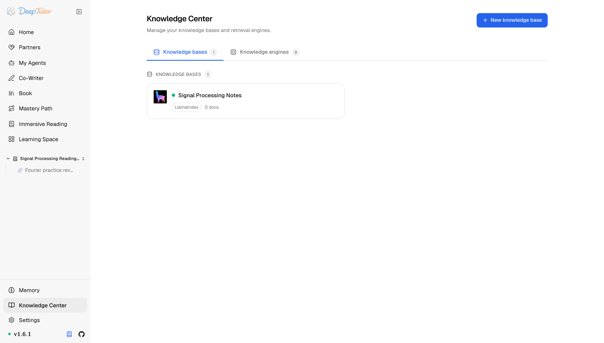
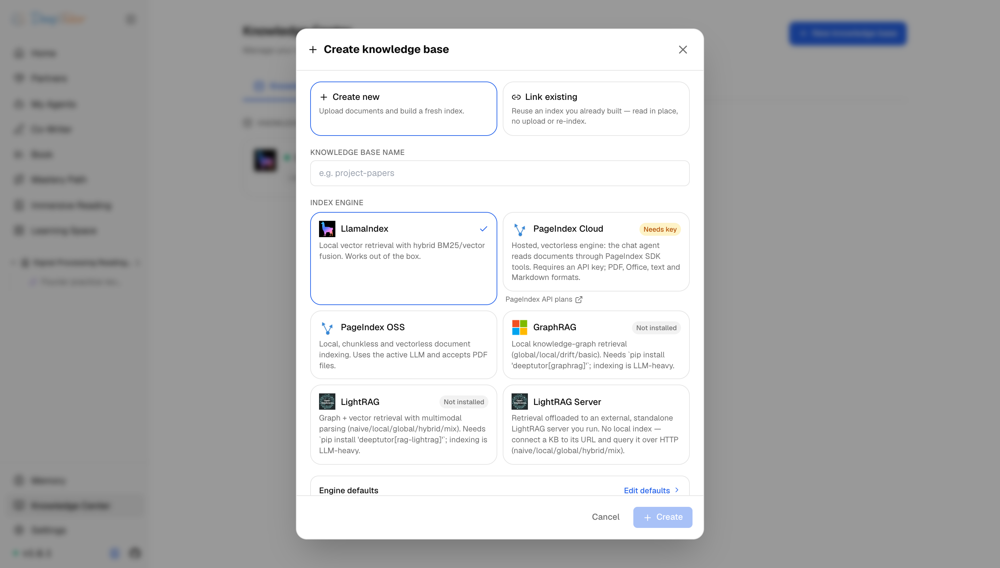
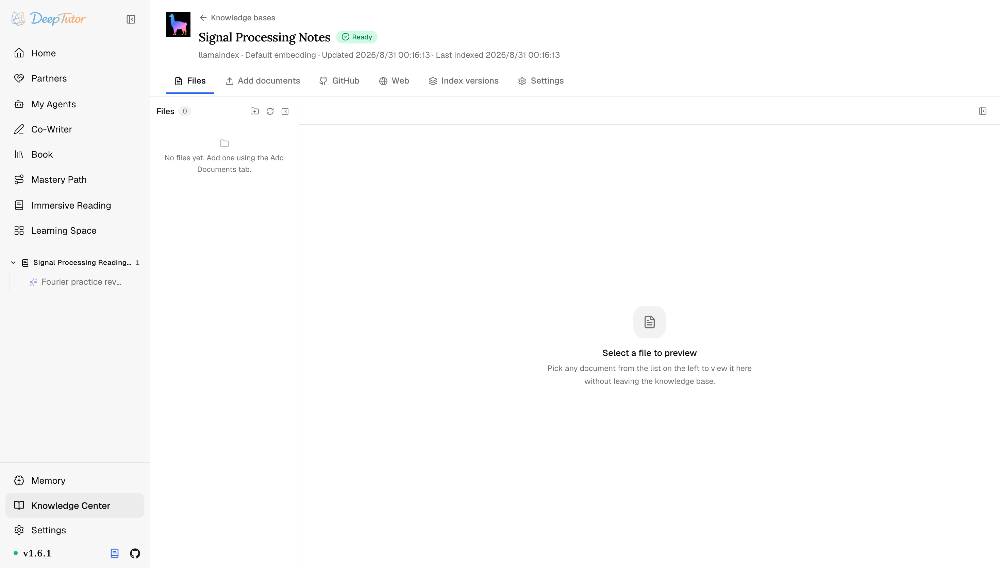
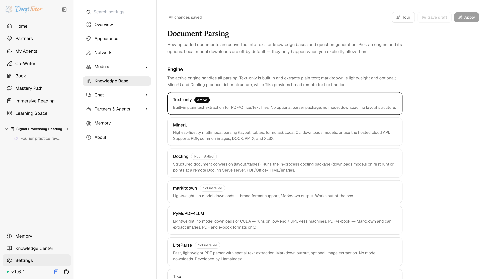

探索 DeepTutor知識空間
7 種解析引擎免費挑！DeepTutor 知識中心實測：GitHub 儲存庫直接喂進知識庫，附 10 條命令！
建立、版本化、同步、檢查並複用為主頁、夥伴、智慧寫作、書籍等學習介面提供依據的知識庫。
原文連結：https://docs.deeptutor.info/zh-cn/explore/knowledge/
知識庫建了這麼多，為什麼 AI 的回答還是不對味？
如果你當初跟我一樣，手動給一堆 PDF 分章節、做摘要，再餵給聊天機器人，那大機率也被「解析不乾淨、重建就翻車」折磨過。
最近我把 DeepTutor 的知識空間（Knowledge Center）完整折騰了一遍，發現它把這件事做得相當系統：內建 7 種文件解析引擎可選，還能把 GitHub 儲存庫、指定站點直接掛成知識來源，外加 10 條命令列維護命令。
可引擎一多，新問題也跟著來：到底該選哪個？重建索引會不會把好不容易建好的庫搞壞？
接下來我們就從入口、建庫、庫內管理、解析引擎一路講到命令列，把答案全部攤開。
知識空間是什麼
知識空間是你建置與管理 RAG（檢索增強生成）背後文件庫的地方；在網頁介面中，這個入口顯示為 Knowledge Center / 知識中心。
一個知識庫（KB）可以為主頁對話、智慧寫作、書籍生成與夥伴對話提供依據。
本頁聚焦知識庫生命週期；引擎架構與選型歸入 RAG 整合。
它在哪裡
點選左側欄的 Knowledge Center（知識中心）。
兩個標籤會把職責分開：Knowledge bases 管理你已建的資料庫生命週期，Knowledge engines 展示當前部署可用的全部檢索整合。

選擇 RAG 整合
每個 KB 都綁定一個檢索整合。
開啟 Knowledge engines，目錄會按 Local、Server、Cloud 與 External knowledge sources 分組；建庫前即可看到 Ready、Needs key、Needs setup 或 Not installed 狀態，能不能用一眼便知。
完整比較見 RAG 整合，其中 PageIndex OSS 與 PageIndex Cloud 是兩個不同 contract（兩套不同的接入約定）。
建立一個知識庫
點選 New knowledge base。第一個選擇最關鍵：
- Create new （新增）——上傳文件並建置一個全新索引。
- Link existing （關聯已有）——複用你在別處已建好的索引；DeepTutor 就地讀取，不上傳、不重建索引。
然後給 KB 命名、選擇索引引擎與初始檢索模式，再新增文件。
PageIndex Cloud 與 PageIndex OSS 是兩個選項：前者上傳到託管服務，後者在本機建置。
更香的是，KB 還能追蹤 GitHub 來源（儲存庫、分支、路徑、glob）或有界 Web 來源（文件 URL、深度、頁數），同步時會對新增、更新與刪除內容做差異對賬，程式碼儲存庫和文件站直接當資料庫用，這波免費相當舒服。

知識庫內部
開啟一個 KB 進行管理。面板把文件檢視器與自適應導航配在一起：
| 標籤頁 | 作用 |
|---|---|
| Files | 原始文件及其抽取狀態，帶就地預覽；可在此刪除單個文件——即使 KB 處於 error 狀態——也無需重建整個庫。 |
| Add documents | 上傳更多 PDF、Office、Markdown、文字、程式碼或資料。 |
| GitHub | 管理儲存庫來源並同步。 |
| Web | 管理有界站點抓取並同步。 |
| Index versions | 以 embedding 簽章為鍵的扁平 version-N 儲存目錄。 |
| Settings | 該 KB 的 embedding 模型、分塊與檢索參數。 |

MarginNote 只顯示 Devices 與 Settings，資料由配對的 add-on 推送。
版本模型這一點特別穩：重新建索引會寫入一個新的 version-N 目錄，並保留之前的，因此重建途中絕不會毀掉一個可用索引。把舊版本當作保留的歷史與退回儲存。
文件解析：7 種引擎怎麼選
文件在能被檢索之前，必須先被轉成文字。
Settings → Knowledge Base → Document Parsing 選擇做這件事的引擎。而且很關鍵的一點：本機模型下載預設關閉，只有當你明確允許時才會發生。

| 引擎 | 權衡 |
|---|---|
| Text-only （內建） | 對 PDF/Office/文字做純文字抽取。無需安裝套件、無下載、無版面結構。 |
| MinerU | 保真度最高的多模態解析（版面、表格、公式）。本機 CLI 下載模型，或用託管雲 API。支援 PDF；BMP、GIF、JP2、JPEG、JPG、PNG、TIFF、WebP 圖片；以及 DOCX、PPTX、XLSX。 |
| Docling | 結構化轉換（版面/表格）。首次執行下載本機模型，也可以 remote 模式連到 Docling Serve 伺服器（無需本機安裝與模型）。PDF/Office/HTML/圖片。 |
| Tika | 僅遠端：連線 Settings → Document Parsing 中設定的 Apache Tika 伺服器，無需本機安裝與模型。格式支援廣 → 輸出 Markdown。 |
| markitdown | 輕量、無下載、格式支援廣 → 輸出 Markdown。 pip install deeptutor[parse-markitdown] 。 |
| PyMuPDF4LLM | 輕量、無下載、無需 CUDA。轉換 PDF、電子書、XPS、圖片、文字與 Markdown，並可抽取圖片。 pip install deeptutor[parse-pymupdf4llm] 。 |
| LiteParse | 輕量結構化解析，無需下載本機模型。 pip install deeptutor[parse-liteparse] 。 |
簡單說：要公式表格的保真度就上 MinerU，想零下載輕量跑就 markitdown / PyMuPDF4LLM / LiteParse，手頭有伺服器就用 Tika 或 Docling 的遠端模式，按需挑就行。
CLI 對應命令
不想點介面的話，命令列一條龍也能管：
deeptutor kb list
deeptutor kb create physics --doc chapter1.pdf
deeptutor kb create textbooks --docs-dir ./pdfs
deeptutor kb add physics --doc chapter2.pdf
deeptutor kb add-github-source physics --repo owner/repo --branch main --path docs --glob '*.md'
deeptutor kb add-web-source physics --url https://docs.example.com --max-depth 3 --max-pages 200
deeptutor kb list-sources physics
deeptutor kb sync physics
deeptutor kb search physics "What is angular momentum?"
deeptutor kb set-default physics從建庫、加文件、掛 GitHub 與 Web 來源，到同步、檢索、設預設，10 條命令全覆蓋，指令碼黨狂喜。
幾條實用提示
- 在建置正式 KB 前，先到 Settings → Models → Embedding 配好 embedding 提供商。
- 若更換了向量化模型（embedding），請重建索引，而不要混用向量空間。
- 重新啟動中斷任務時會報可重試錯誤，請重新執行。
- 留一個小的測試 KB 用於夥伴/管道冒煙測試。
- 用 Docker（容器部署工具）時，持久化整個
data/目錄樹，讓 KB 版本能在容器重新啟動後存活。
相關閱讀
- RAG 整合 ——比較知識庫背後的知識引擎
- 主頁 ——把 KB 掛到一輪裡
- 沉浸式閱讀 ——讀一份文件，而不是給一整個語料庫建索引
- 書籍 ——從 KB 編譯學習材料
- 夥伴 ——把 KB 複製進夥伴工作區
- 設定 ——embedding 提供商與解析引擎
實際效果還會受到所選引擎、文件類型以及具體語料的影響，建議大家結合自己的資料實際體驗評估，選不準就先拿小庫跑一輪。